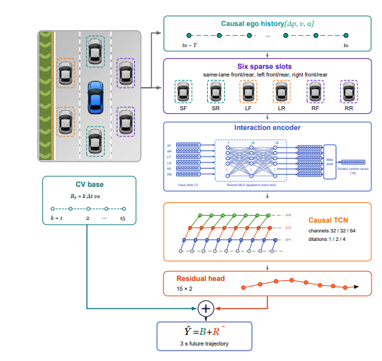
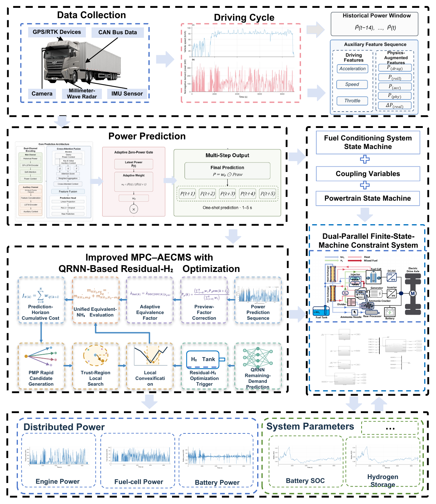

Jul. 2026 - Present
University of Alberta - NODE Lab
Research Assistant, Edmonton, Canada
Multimodal perception and state estimation for autonomous driving.
B.E. student in Automotive Engineering, Chang’an University & University College Dublin.

I am an undergraduate student in Automotive Engineering in the dual-degree programme between University College Dublin and Chang’an University. I conduct research with the NODE Lab at the University of Alberta and Tsinghua University’s State Key Laboratory of Intelligent Green Vehicle and Mobility.
My work focuses on prediction and control for intelligent vehicles, with applications in autonomous driving and hybrid-vehicle energy management. I also work on multimodal perception and state estimation for autonomous systems.
I am seeking MPhil or PhD opportunities starting in Fall 2027.
Research Assistant, Edmonton, Canada
Multimodal perception and state estimation for autonomous driving.
Research Assistant, Beijing, China
Vehicle trajectory prediction and hybrid-vehicle energy management.
Research Assistant, Xi'an, China
Mechanical-metamaterial seat isolators. Project leader, National College Student Innovation and Entrepreneurship Training Program; participant in Chang’an University’s undergraduate innovation training camp (30 students university-wide).
Dual-degree programme · B.E. in Automotive Engineering
Chang’an University, Xi’an, China: GPA 3.68/5.00 · Grade 87/100 · Top 15%.
University College Dublin, Dublin, Ireland: GPA 3.65/4.20.

Zhengxian Chen, Qihang He, Chenggang Zhang, Han Hai, Yize Sun, Jieyu Wang, Chaosheng Huang, and Jun Li.
Energy, 360, 141763 (2026).

Chenggang Zhang†, Zhengxian Chen†,*, Yize Sun, Jiaming Zhang, Chaosheng Huang, and Jun Li.
Accepted at the IEEE Intelligent Transportation Systems Conference (ITSC 2026, Oral).

Zhengxian Chen, Chenggang Zhang, Yuyang Pan, Jingyue Zheng, Fojin Zhou, Peng Ni, Yichong Li, Junyi Wang, Tianyang Gong, Xun Hu, Minhao Gao, Yuxing Wu, Mingyang Li, Pengyi Xiao, Mingqiang Wang, and Jun Li.
Presented at the Applied Energy Symposium and Forum: Renewable Energy Matrix (REM 2025, Oral), and published in Energy Proceedings, 60 (2026).
Selected as an Outstanding Paper and invited to submit an extended version to a special issue of Applied Energy.

Zhengxian Chen, Yuyang Pan, Tianyang Gong, Chenggang Zhang, Yunwei Li, Jieyu Wang, Huanan Wang, Wenfeng Guo, Mingqiang Wang, Chaosheng Huang, and Jun Li.
Scientific Data (2026).

Xiao Yang, Lingkai Yuan, Yicheng Shen, Yihan Zhang, Zipei Zhang, Junwei Mai, Jiaming Zhang, Xiangxi Xu, and Chenggang Zhang*.
Accepted at the 6th International Conference on Artificial Intelligence, Automation and High Performance Computing (AIAHPC 2026, Oral).

Jiaju Kang, Puyu Han, Xu Wang, Weichao Pan, Ruida Liu, Chenggang Zhang, and Keyan Jin.
In Advanced Intelligent Computing Technology and Applications, pp. 343-353 (2026). Oral paper at ICIC 2026.

Tianyang Gong, Zhengxian Chen, Yuyang Pan, Yuxing Wu, Chenggang Zhang, Peng Ni, Mingqiang Wang, and Jun Li.
In the 3rd IEEE International Conference on Artificial Intelligence and Automation Control (AIAC), pp. 427-431 (2025).
Ongoing research presented separately from published and accepted work.

Zhengxian Chen† and Chenggang Zhang† (complete author list in preparation).
Manuscript in preparation.
Tools: Python, PyTorch, TensorFlow, MATLAB/Simulink, ROS, SolidWorks, LaTeX.
Developing a learning-based multimodal sensor-fusion framework for robust state estimation, perception, and motion planning in autonomous vehicles. The work fuses onboard sensor and visual data and is validated with real vehicle data and high-fidelity ROS simulations.
Developed a prediction-embedded MPC framework integrating Attention-LSTM short-horizon power-demand prediction with multi-source energy management. The work studies prediction-informed power allocation among the vehicle’s energy sources.
Developed a rule-based strategy coordinating the diesel engine, hydrogen fuel cell, and battery, with key parameters optimized using the Sparrow Search Algorithm. MATLAB simulation identified efficient operating ranges of 40-45 kW for the diesel engine and 5-10 kW for the fuel cell.
Led the design of a mechanical-metamaterial-inspired isolator integrating positive- and negative-stiffness elements in a monolithic 3D-printed TPU structure. Parametric design, finite-element simulation, prototyping, and dynamic verification produced a 9.75-10.30 N force plateau and an effective vibration-isolation region.